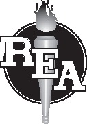

Research & Education Association
258 Prospect Plains Road
Cranbury, New Jersey 08512
Email: info@rea.com
AP® WORLD HISTORY: MODERN CRASH COURSE,® 3rd Edition
Copyright © 2020 by Research & Education Association, Inc.
Prior editions copyright © 2017, 2012 under the title AP® World History Crash Course by Research & Education Association, Inc. All rights reserved. No part of this book may be reproduced in any form without permission of the publisher.
Printed in the United States of America
Library of Congress Control Number 2019949057
ISBN-13: 978-0-7386-1261-4
ISBN-10: 0-7386-1261-8
LIMIT OF LIABILITY/DISCLAIMER OF WARRANTY: Publication of this work is for the purpose of test preparation and related use and subjects as set forth herein. While every effort has been made to achieve a work of high quality, neither Research & Education Association, Inc., nor the authors and other contributors of this work guarantee the accuracy or completeness of or assume any liability in connection with the information and opinions contained herein and in REA’s software and/or online materials. REA and the authors and other contributors shall in no event be liable for any personal injury, property or other damages of any nature whatsoever, whether special, indirect, consequential or compensatory, directly or indirectly resulting from the publication, use or reliance upon this work. Links to external sites in this publication or companion online materials are provided as a convenience to readers and for informational purposes only. Though every reasonable effort has been made to publish current links, URLs may change over time. No endorsement of any external link is made or implied, and neither the Publisher nor the Author(s) are responsible for the accuracy, legality, or content of any external site or for that of subsequent links.
AP® and Advanced Placement® are trademarks registered by the College Board, which is not affiliated with, and does not endorse, this product. All other trademarks cited in this publication are the property of their respective owners. Released AP® World History: Modern prompts, rubrics, and course key concepts copyright © 2019 by the College Board. Unit timelines are presented in accordance with the College Board’s AP® World History: Modern timelines, as published in the 2019–2020 AP® World History: Modern Course and Exam Description.
Cover image: © iStockphoto.com/JacobAmmentorpLund

REA Crash Course® and REA® are registered trademarks of Research & Education Association, Inc.
C20